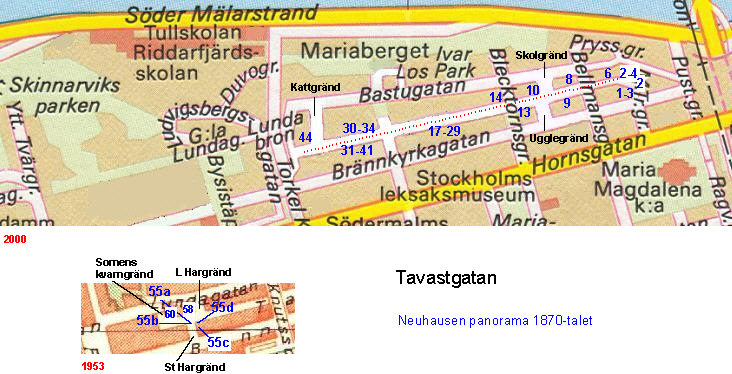

|
Ur Stockholms gatunamn Nuvarande Ugglegränd har kallats Tavastgränd (Tawästegrendhen 1650, Tawaste gränden 1679). Denna del av Mariaberget brukar kallas Tavastberget eller Tavastbergen(a) (Tawadstberget 1669).
Den östligaste delen av Tavastgatan har gått under namnet »Slem-grenden» 1670, »Slemme gränden» och »Slemme
gattan» 1679. Ordet slem betyder 'dålig, usel' och namnet karakteriserar gatan; i Holms tomtbok 1679
konstateras, att »Slemme gränden intet kan kiöras».
 |